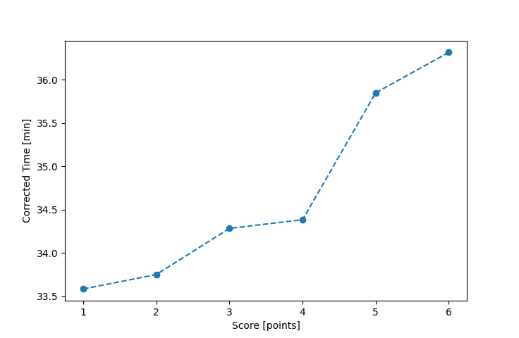

| Wind: | 2-3 (BFT) |
|---|---|
| RC: | Barry_O, Jim_S |
| Date: | June 06, 2021 |
| Notes: | M2 Starboard Rounding |
| Rank / Score | Name | Boat | Input Time [mm:ss] | Input Offset [mm:ss] | Race Time [mm:ss] | Race Time [s] | Handicap | Corrected Time [s] | Corrected Time [mm:ss] |
|---|---|---|---|---|---|---|---|---|---|
| 1.0 | Mike_F | SF | 23:55 | 00:00 | 23:55 | 1435 | 1.00400 | 1429 | 23:49 |
| 2.0 | Nedra_F | SF | 24:06 | 00:00 | 24:06 | 1446 | 1.00400 | 1440 | 24:00 |
| 3.0 | Rod_H | LASEM | 24:13 | 00:00 | 24:13 | 1453 | 0.97300 | 1493 | 24:53 |
| 4.0 | David_Bu | SF | 26:02 | 00:00 | 26:02 | 1562 | 1.00400 | 1556 | 25:56 |
| 5.0 | Matt_L | DLPSR | 28:54 | 00:00 | 28:54 | 1734 | 1.08600 | 1597 | 26:37 |
| 6.0 | Ian_O | SF | 26:49 | 00:00 | 26:49 | 1609 | 1.00400 | 1603 | 26:43 |
| 7.0 | Bill_P | SF | 26:59 | 00:00 | 26:59 | 1619 | 1.00400 | 1613 | 26:53 |
| 8.0 | Chris_E | SF | 27:15 | 00:00 | 27:15 | 1635 | 1.00400 | 1628 | 27:08 |
| 9.0 | Lewis_V | BCN | 23:54 | 00:00 | 23:54 | 1434 | 0.87000 | 1648 | 27:28 |

Application Notes:
All race results are unofficial
View source code at https://github.com/cessnao3/portsmouthracecalc/